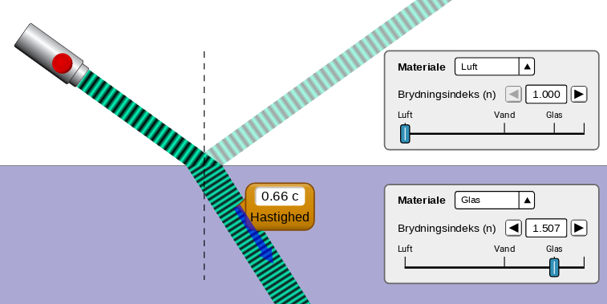
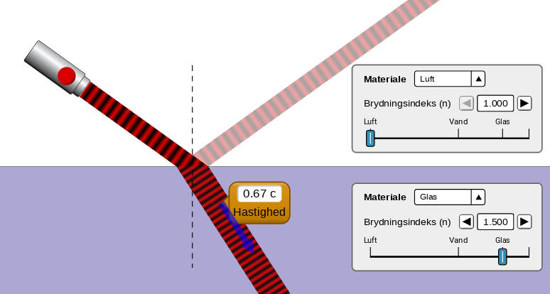
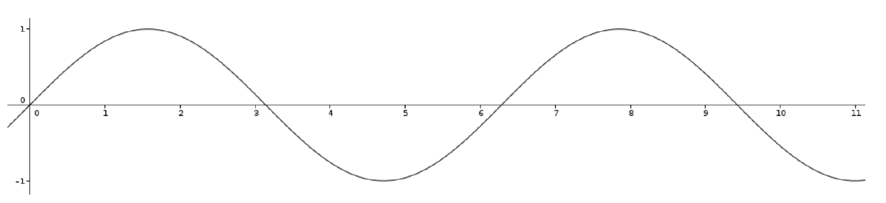
Longitudinalbølger
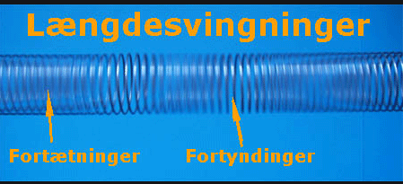
Transversalbølger
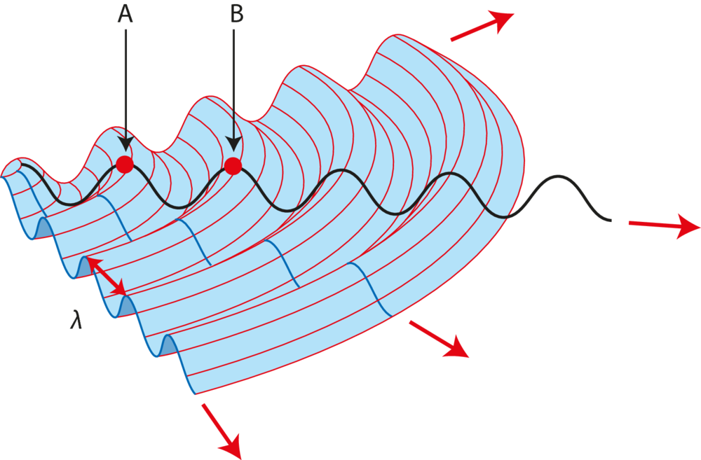
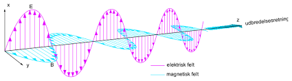
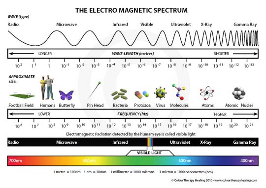
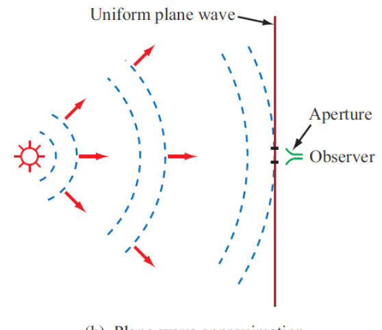
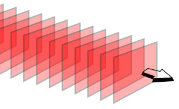
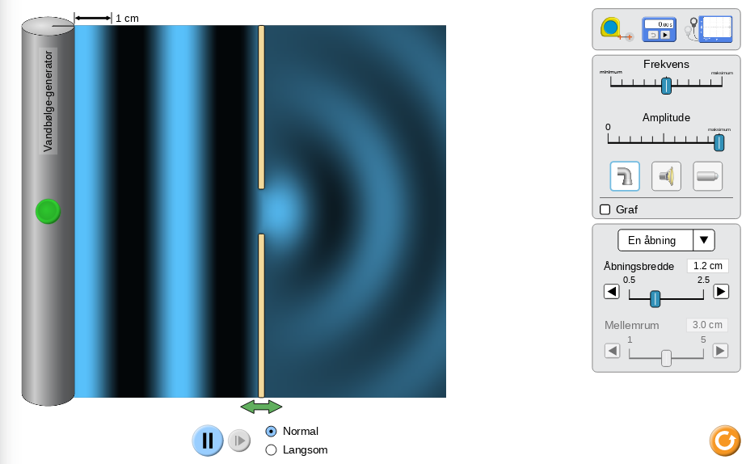
Ethvert punkt i en bølgefront er udgangspunkt for en kuglebølge. Den nye bølgefront dannes ved superposition af disse kuglebølger.
Hvordan udtaler man det egentlig?
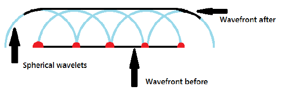
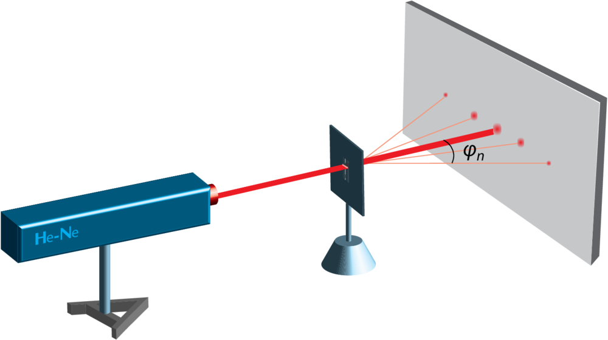
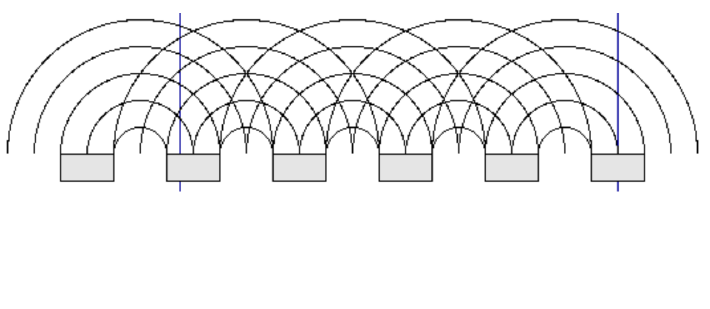